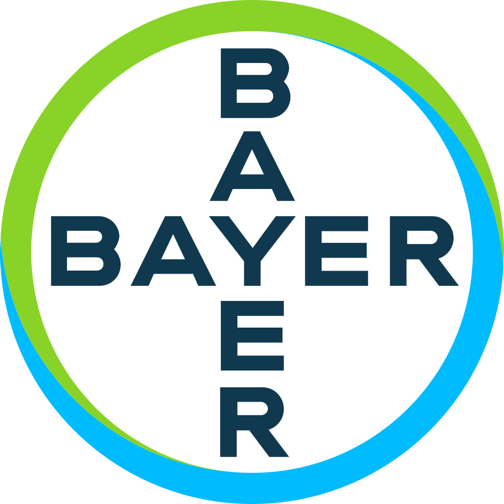
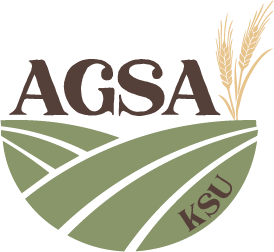

Essential Overlaps for Crop Improvement is part of the Corteva Symposia Series, supporting interdisciplinary dialogue and innovation in agricultural sciences.
what you'll gain
We use genotype x environment x management (GxExM) as a shared framework to connect discovery, field performance, and decision-making.
Graduate students, faculty, industry scientists, and extension professionals engage in conversations designed for synthesis, not parallel tracks.
From genomics-to-phenotype pipelines to disease management and scalable phenotyping, discussions stay oriented toward implementation.
Workshops, posters, lightning talks, and panels are structured to create interactions that can carry forward after the event.
Confirmed Speakers

Associate Professor at University of Hawai’i at Manoa

Chief Research Scientist at CSIRO
Australia’s national science agency

Assistant Professor of Agricultural and Biological Engineering at the University of Florida
Distinguished Laureate at Corteva Agriscience
Distinguished Professor at Kansas State University
Workshops
Built by students, for students: Grad students teaching the tools and workflows they actually use in their own research.
Hands-on nd focused on problem-solving.
Bring your laptop and be ready to learn.
Sponsors



Become a Sponsor
Reach out to learn more about available tiers and how your organization can be part of this event.
Contact us
emelgar@ksu.edu
We will get back to you with details about sponsorship tiers, benefits, and logistics.